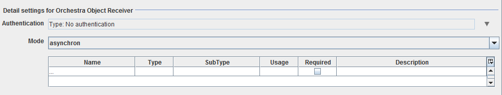

Orchestra Object Receiver

Topic content
Description
Orchestra Object Receiver is used to connect an external java program with orchestra on basis of a predefined client library. The basic idea is, that any client can use the library for sending data to an instance of the orchestra object receiver channel. The channel itself can work in synchronous or asynchronous mode. Depending on the setting, the client may receive a result, or orchestra continues execution without blocking the client.
Creation
To create a Orchestra Object Receiver follow the steps described in the general description of Channels
Configuration
The dialog to configure the Orchestra Object Receiver looks like:

Authentication: HTTP authentication: basic: user/password digest: user/password certificate authentication: authentication of the client via certificate (X509)
Mode: Defines the mode of operation. When set to request, orchestra submits the request, but doesn't wait for completion. Otherwise, when synchronous is used, the execution blocks until a result is received
Parameters: Define one or more parameters that should be passed to the remote orchestra
|
The file " orchestra_service_client.jar" is needed to send messages via java applications to orchestra. |